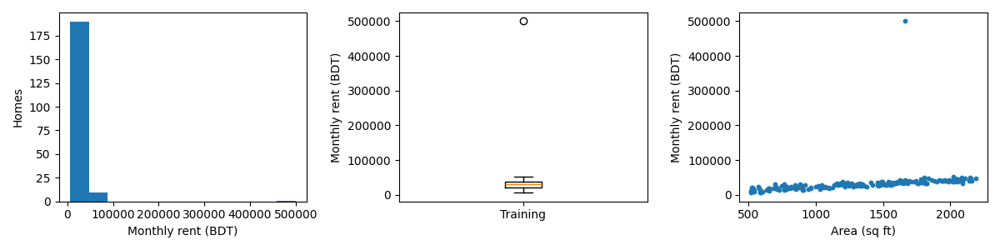

Nana circles a very expensive home in a rent notebook. Tuktuk announces that all large homes must cost that much. Mina covers the circle and draws the other homes as dots. Most follow a gentler pattern. One attention-grabbing entry had hidden the questions they should ask about the whole table.
Exploration helps you understand what was collected before a model compresses it into a rule. Start with a question, choose a picture that can answer it, and check surprising entries.
You will read distributions, compare two measurements and calculate linear association. You will also learn why a neat line cannot prove cause.
Exploratory data analysis, or EDA, uses summaries and pictures to investigate a dataset. A distribution describes how values are spread. Correlation measures the direction and strength of a particular kind of association; here we use Pearson's linear correlation.
| Row | x | y |
|---|---|---|
| 1 | -1.5 | -0.4 |
| 2 | -0.8 | -1.6 |
| 3 | 0 | 0.6 |
| 4 | 0 | 0.6 |
| 5 | 0.8 | -0.7 |
| 6 | 1.5 | 1.5 |
A scatter plot places one dot per row using both measurements. Does y generally rise as x rises? The lab displays full-precision constructed points; the table above is a one-decimal sketch.
A histogram groups one measurement into intervals and counts rows in each interval. A box plot shows the median and middle half of the data, with a convention for distant values. These plots can reveal skew or unusual entries that an average hides.
Begin with x values -2,-1,0,0,1,2. Their mean is zero. Divide by their population standard deviation to give unit spread. Use noise values 1,-2,1,1,-2,1; they also have zero mean. Their dot product with x is zero.
Scale the noise to unit spread too. To construct target correlation 0.6, take 0.6 times x plus 0.8 times this noise. The noise supplies variation that does not lean with x. The resulting y also has unit spread.
centre the two observed columns xx = sum of squared x gaps; yy = sum of squared y gaps xy = sum of products of matching gaps r = xy / sqrt(xx * yy), if both spreads are nonzero slope = xy / xx; intercept = mean(y) - slope * mean(x)
For the six full-precision points, xx is 6, yy is 6 and xy is 3.6. Pearson r is 3.6 divided by 6, giving 0.6. The least-squares slope is also 0.6 because both axes have unit spread; that equality does not hold for arbitrary units.
Set the slider to -1. Every point lies on a falling line. Set it to zero. Linear association disappears, but that does not prove independence. Points on a symmetric U-shaped curve can have zero Pearson r while still following a precise rule.
Try correlations -1, 0 and 0.6. Compare the fitted line and vertical residuals. At either endpoint, the noise coefficient vanishes. Between endpoints, the cloud has genuine vertical variation.
Place six paper dots on squared paper. Ask a friend to move them into an upward trend, a downward trend and a U shape. Discuss which arrangements a straight line summarises badly, even when the pattern is obvious by eye.
For the rent data, ask how many homes were collected, what each row means, which fields are missing, and whether measurement units match. Then ask how rents are distributed and whether area and rent move together.
The explicit program constructs the six-point cloud and calculates its joint sums. Its measured r and fitted line agree with the default lab.
NumPy verifies Pearson correlation, and LinearRegression finds the squared-residual-minimising line. Keep the distinction between the line's slope and the unit-free correlation.
The rent example reserves held-out rows before exploration. It saves a histogram, box plot and area/rent scatter from training rows. It also prints missingness, the largest training rent and the computed pairwise correlation.

A box plot's distant marker is a prompt to investigate. A common rule flags values beyond 1.5 times the interquartile range from the quartiles. That plotting convention does not establish an impossible value or authorise deletion.
Use a short EDA checklist: define rows and units; count rows and missingness; inspect ranges and duplicates; plot distributions; compare meaningful pairs; record questions and justified decisions. Preserve the raw table so cleaning choices can be reviewed.
Pearson r divides the centred dot product by the product of the two centred lengths. The Cauchy–Schwarz inequality bounds it between minus one and one. Positive rescaling of either axis changes slope units but leaves r unchanged.
If either column is constant, its centred length is zero and r is undefined. A library may return NaN. Missing values also affect the rows included: pandas computes pairwise correlations from rows where both selected values are present. Different pairs can therefore use different subsets.
Correlation can change when an extreme point or a subgroup is added. Report the plotted pattern, sample size and collection limits alongside a coefficient. Invented course rents teach analysis mechanics; they are not evidence about present-day Dhaka housing prices.
Next, use the data preparation practice sheet to combine cleaning, encoding, scaling and honest evaluation.